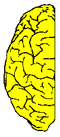
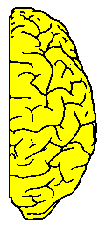
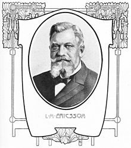

Combinatorial foRmalized evAluation
sPecies for Conjunctive c0ncurrent coNtainerization,
the Fifteenth International Scientific Congress on exponentially generative CRAP.
(co-located with the EWSCS '25)
Submissions
Sign up by 5pm on Wednesday! This deadline will absolutely under no circumstances be postponed.
NOTE!!! New deadline 8pm! Late submissions may be accepted.
Overview
The synthesis and proliferation of models for the composition of all life and its systems requires the endless generation of innovation unbound by the usual limitations of scientific discourse. A concurrency between all processes evaluates conjunctively into a combinatorial explosion of species specification, multi-factor architectures must be discretely queried, such that the complexity of non-unordered outer space could be authenticated formally.
CRAPcon 2025 is a profound collaborative entity which lives at the boundary between dissemination and exploration. A forum for international researchers to discuss and present new frameworks for concurrent combinatorial evaluation, the verification of directed queries, horned-Petri queries, topological evaluation-ology, species of security, and other new and i-nnovative topics by top scientists in the penninsula.
|  |
A
Metaphor Through CrapCon conferences, we are trying to relate the analytic thinking, required in focused conference´s sessions, with the synthetic thinking, required for analogies generation, which calls a for multi-focus domain and divergent thinking. We are trying to promote synergic relationships between analytically and synthetically oriented minds, as it is found between left and right brain hemispheres, by means of the corpus callosum. Then, CrapCon 2025 might be perceived as a research corpus callosum, trying to bridge analytical with synthetically oriented efforts, convergent with divergent thinking, and focused specialists with non-focused or multi-focused generalists © Content and design of this inset courtesy of WMSCI'25 |
 |
Topics of Interest
The conference covers a broad spectrum of topics. Potential topics include, but are not limited to:
- Fundamental Groups of Road Architecture
- Diconjunctive Diquery Divaluation
- Specificational Combinators
- Categories may not Apply
- Point Topology of no Return
- Cooperative Question Answering
- Informally Refutating Dangers
- On being a Dspace, and 3 Ways of Saying I
- Personality Type Generating Tests for Series
- Components Without Interaction and Interfaces
- Naturally Perfect Black-Box Sequences
- Integer Parititons of Interval Spieces
- Relationships Between Bi(blio)graphical RS using Algebraic Horn Clauses
- Directed Alice-Bob-ology and other Familiar Combinatorial Families
- Efficiently from lpo- to L-space in the Presence of Uncertainty
The conference website is: https://ppullonen.github.io/CRAPcon25/
Call for Presentations
We invite researchers from all backgrounds to submit their findings in the form of oral presentations. Slides are a bonus! These presentations are an opportunity to share innovative, recent and mindboggling ideas, methodologies, and results with the global CRAPcon community.
Presentation duration ranges from 2 to 7 minutes. Submit the title of your talk to any Program Committee or Steering Committee member for consideration.
Organizational, Reviewing, and Selection of Best Papers Policies
All submissions are accepted through a rigorous process (blindly). The conference honors outstanding contributions with imaginary awards, determined by optimized participative peer review queries.
Conference Venue
The conference will take place at the Viinistu Art Hotel, offering a vibrant mix of art, temporal water and hotel.
Schedule
March 5th (Wednesday)| 20:30 - 20:30 | Welcome and networking dinner |
| 20:30 - 20:35 | Opening remarks |
| 20:35 - 21:30 | Keynote presentation |
| 21:30 - 21:45 | Interactive session |
| 21:45 - 22:00 | Closing remarks and sadness! |
Program Committee
- Dr. Pille Pullonen-Raudvere, unbelievably-PhD-finally.
- Dr. Mr. Niels Voorneveld, BSc, MSc, PhD.
Left Already Committee
- Dr. Ago-Erik Riet. PhD from USA
Overseas Advisory Board
- Mr. Dan Bogdanov, Director
- Dr. Alisa Pankova, Ph.D.
- Dr. Vesal Vojdani, Phere-are-you? (we neeD you!)
- Mrs. Liina Kamm, Ph.D.
Independent Swiss Expert
- Dr-Not-Yet. Konstantin Tretjakov, Ph.D. Emeritus
Local Organizing Committee
- Tarmo Uustalu
- Monika Perkmann
- Peeter Laud
Titanium Sponsors
- Eerikson, GmbH., Inc., AB, OÜ 